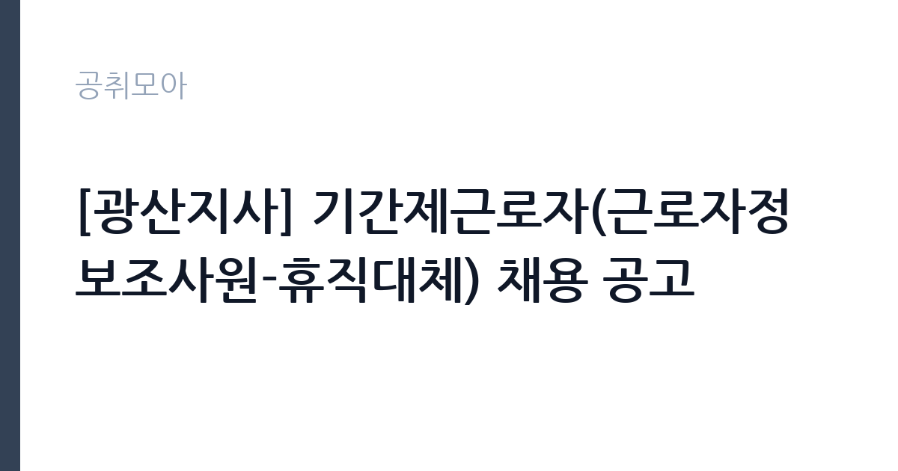

[공공기관] [광산지사] 기간제근로자(근로자정보조사원-휴직대체) 채용 공고
근로복지공단 · 경북 · 마감 2026-11-05 (D-7) · 출처 잡알리오

한눈에 보는 모집 조건
| 기관 | 근로복지공단 |
|---|---|
| 공고명 | [광산지사] 기간제근로자(근로자정보조사원-휴직대체) 채용 공고 |
| 고용형태 | 기간제 |
| 근무지 | 경북 |
| 게시일 | 2026-10-29 |
| 마감일 | 2026-11-05 (D-7) |
지원자격, 이렇게 읽으세요
- 0 학력·경력·연령 제한 없음
- 0 임용예정일 즉시 근무가 가능한 자
기간제 근로자는 근로계약 기간이 정해진 신분입니다. 계약 기간과 갱신 가능 여부가 근로계약서에 명시되며 기간 만료 시 근로관계가 종료됩니다. 결원 보충이나 특정 사업 기간에 맞춰 채용되는 경우가 많아 업무 범위가 명확합니다. 이번 공고는 근로복지공단에서 직접 진행하는 자체 전형으로, 응시자격과 제출서류는 공고문에 항목별로 제시됩니다. 근로자 정보조사는 학력 제한이 크지 않지만, 사업장을 직접 방문해 사실을 확인하는 업무 특성상 경력과 응대 능력을 봅니다. 노무·사회보험 관련 지식이나 조사 경험이 있으면 유리하고, 운전면허와 차량 운행 가능 여부가 실질적인 조건이 되는 경우가 있습니다. 기간제 신분으로 계약 기간이 정해지며, 휴직대체라면 전임자 업무를 인수받습니다. 서류는 접수 마감 이후 보완이 되지 않으므로 자격 요건과 증빙 서류를 마감 전에 모두 갖춰야 합니다. 공고문에 명시된 우대 사항은 해당 여부를 확인해 증빙을 첨부해야 가점이 반영됩니다. 공고문의 응시자격 표를 보면 자격 항목이 여러 줄로 나뉘어 있으므로, 각 줄을 하나씩 체크하며 본인 해당 여부를 표시해 두면 누락을 줄일 수 있습니다. 이 공고 원문에 적힌 응시 조건 문구는 '0 학력·경력·연령 제한 없음'입니다. 문구를 그대로 읽고 본인 해당 여부를 하나씩 표시해 두면 서류 단계에서 탈락하는 일을 줄일 수 있습니다.
이 공고의 포인트
이 공고의 첫 번째 포인트는 고용 형태입니다. 계약 기간이 정해져 있어 근무 종료 시점이 명확합니다. 그만큼 짧은 기간에 어떤 실적을 남길지가 중요해집니다. 두 번째는 업무 범위가 명확하다는 점입니다. 근로자 정보조사 직무로 채용되므로 배치 이후 담당 업무가 크게 흔들리지 않습니다. 세 번째는 근무지입니다. 경북 지역 근무로 수도권 공고에 비해 지원자 분포가 넓지 않아 상대적으로 경쟁이 분산되는 경우가 있습니다. 선발 절차가 단순한 편이어서 서류와 면접 준비에 집중할 수 있습니다. 선발 인원은 공고문에 명시되어 있으니 모집분야 항목을 함께 확인하십시오.
전형은 어떻게 진행되나
서류전형과 면접전형 외에 직무수행능력 평가가 붙는 경우가 있습니다. 평가 방식은 공고문에 구체적으로 적혀 있으므로 어떤 항목에 배점이 높은지 먼저 파악하십시오. 면접에서는 지원 동기보다 실제 업무 경험에 대한 질문이 많고, 답변의 구체성이 평가를 가릅니다. 전형 일정은 서류 마감 이후 빠르게 진행되므로 연락 가능한 번호를 정확히 기재하고 문자와 메일을 수시로 확인해야 합니다. 최종 단계에서는 결격사유 조회와 신체검사가 진행됩니다. 제출서류 원본은 최종 단계에서 다시 요구되는 경우가 있어 사본과 함께 보관하십시오.
원문에서 확인한 전형 방식
0 학력·경력·연령 제한 없음 0 국가공무원법 제33조 및 공단 인사규정 제14조에 저촉되지 않는 자 0 병역법 제76조에서 정한 병역의무 불이행 사실이 없는 자 - 현재 군복무 중인 경우 임용예정일 이전 전역이 가능한 자 0 임용예정일 즉시 근무가 가능한 자 - 임용일은 공단 사정에 따라 변경될 수 있음
이런 분께 추천해요
- 현장 조사·민원 응대 경험이 있는 분
- 노무·사회보험 관련 지식이 있는 분
- 차량 운행과 사업장 방문이 가능한 분
지원 전 체크리스트
- 응시자격 요건과 경력 기준을 충족하는가 — 경력은 증명서로 입증해야 합니다
- 계약 기간과 근무 시작일·종료일을 확인했는가
- 제출서류 목록을 모두 준비했는가 — 누락 시 서류 단계에서 탈락합니다
- 접수 마감 2026-11-05 이전에 접수 방식을 확인해 제출했는가
모집 일정과 제출 타이밍
공고 게시일은 2026-10-29, 접수 마감은 2026-11-05입니다. 준비 기간은 약 7일로 서류 준비와 자격 증빙을 함께 처리하기에는 넉넉하지 않은 편입니다. 첫 이틀 안에 공고문과 첨부 서식을 내려받아 요건을 확인하고 남은 기간에 증빙 서류를 발급받는 일정이 현실적입니다. 면접은 서류 합격자 발표 후 짧은 간격으로 진행되는 경우가 많으므로 서류 제출과 동시에 면접 준비를 시작하는 편이 안전합니다. 마감일에는 접수 시스템이 몰리므로 하루 전까지 제출을 마치는 것이 좋습니다. 제출 서류는 공고문에 적힌 순서대로 정리하면 담당자가 확인하기 쉬워 누락이 줄어듭니다. 경북 근무지는 시설 간 거리가 멀어 이동 시간을 넉넉히 잡아야 합니다. 마감까지 일주일 안팎이 남아 서류 준비와 증빙 발급을 병행해야 합니다. 선발 인원은 공고문의 모집분야 항목에 직종별로 제시되어 있습니다.
직무 이해하기: 공공기관
공공기관은 도로와 수자원, 농지, 부동산 시장 관리 같은 공적 기능을 수행합니다. 현장 사업소는 도로와 시설 유지 관리, 조경과 환경 관리 업무를 직접 수행하며 계절 사업에 따라 기간제 인력을 채용합니다. 근로자 정보조사 업무는 사업장을 방문해 근로 실태와 고용 정보를 확인하는 일입니다. 사업장의 근로자 수와 고용 형태, 임금 지급 상태를 확인하고, 산재·체불 관련 신고 사건의 사실관계를 조사합니다. 조사 결과를 보고서로 정리해 담당 부서에 넘기고, 필요하면 추가 확인을 위해 재방문합니다. 사업주와 근로자 양쪽을 대면하므로 갈등 상황이 생길 수 있고, 개인정보와 사건 내용의 비밀 유지가 엄격합니다. 업무는 혼자 처리하기보다 부서 단위로 나눠 진행되므로 담당 구역과 협업 범위를 입사 초에 확인하는 것이 중요합니다. 현장 업무와 사무 업무의 비중은 기관의 사업 일정에 따라 계절별로 달라집니다.
자기소개서 작성 팁
지원서는 조사·확인 업무 경험을 구체적으로 쓰는 것이 효과적입니다. 사실관계를 확인해 보고서로 정리한 경험이 있다면 가장 앞에 배치하십시오. 사업장이나 현장을 방문해 민원을 처리한 경험도 좋은 소재입니다. 중립적 태도와 기록의 정확성을 보여주는 사례를 반드시 한 개 이상 넣으십시오. 직무 경험이 많지 않다면 경험의 양보다 과정을 구체적으로 쓰는 편이 낫습니다. 어떤 상황에서 무엇을 판단했고 어떤 결과가 나왔는지 순서대로 서술하면 신뢰가 생깁니다. 지원 동기와 기여 방안은 한 문단씩 짧게 유지하고, 가장 자신 있는 경험에 분량을 몰아주십시오. 마지막 문장은 포부보다 구체적인 실행 계획으로 끝내는 것이 좋습니다.
면접 준비 포인트
면접에서는 사실 확인 방식과 중립성을 확인합니다. 사업주와 근로자의 진술이 다를 때 어떻게 확인할지, 조사에 비협조적인 사업장을 어떻게 설득할지 묻습니다. 감정적 판단을 배제하고 기록과 증빙으로 확인한다는 점을 강조하십시오. 개인정보 보호 의식도 평가 대상입니다. 답변은 상황, 판단, 조치의 순서로 정리하면 전달이 분명해집니다. 모르는 질문에는 모른다고 밝히고 확인 방법을 제시하는 편이 억지 답변보다 낫습니다. 마지막에는 근무 의사와 함께 2026-11-05 이후 일정에 언제든 응할 수 있다는 점을 전달하십시오. 직무 특성상 체력이나 근무 시간에 대한 질문이 나올 수 있으므로 솔직하게 답하고 관리 계획을 함께 제시하십시오.
급여·근무조건 읽는 법
알리오(공공기관 경영정보 공개시스템) 2025년 결산 경영공시 기준으로 근로복지공단 일반정규직 1인당 평균보수액은 6,828만원, 공시된 신입사원 초임은 3,664만원입니다. 평균보수액은 기본급에 고정수당·실적수당·성과상여금·급여성 복리후생비를 모두 합산한 값이라 월 기본급만 보고 판단하면 실제와 크게 어긋납니다. 이번 공고는 기간제 채용이라 위 정규직 평균보수는 그대로 적용되지 않습니다. 기간제 보수는 기관의 기간제 임금 기준을 따르며 계약 기간이 함께 정해집니다. 근로복지공단 기간제근로자 보수는 공단의 기간제 임금 기준을 따르며, 기본급에 정액급식비 등 수당이 더해집니다. 계약 기간이 정해져 있어 월 보수와 근무 개월 수를 곱한 총액으로 비교해야 합니다. 정확한 금액은 공고문 처우 항목에서 확인하십시오. 2026년 적용 최저임금은 시급 10,320원, 월 환산 2,156,880원(주 40시간·209시간 기준)입니다. 고용노동부 고시 제2025-47호로 확정된 금액입니다. 공고문에 금액이 제시되지 않은 항목은 원문 보수표나 처우 설명에서 확인해야 하며 확인되지 않은 수치는 쓰지 않는 것이 원칙입니다. 비교할 때는 월 급여뿐 아니라 상여·명절휴가비·복지포인트·초과근무수당까지 포함한 연간 총액으로 계산하십시오. 기간제라면 계약 기간 동안의 총액을, 무기계약이라면 호봉 상승과 정년까지의 누적 소득을 기준으로 판단하는 편이 정확합니다.
자주 묻는 질문
- 선발 인원은 몇 명인가요?
공고문의 모집분야 항목에 직종별 인원이 표로 제시되어 있습니다. 첨부된 공고문 원문에서 확인하십시오. - 근무지는 어디인가요?
경북 지역의 근로복지공단 소속 근무지입니다. 세부 주소와 출퇴근 조건은 원문 공고문에서 확인할 수 있습니다. - 보수는 얼마인가요?
채용 신분(기간제)과 기관 임금 규정에 따라 정해지며 구체적인 금액은 공고문 처우 항목에 제시됩니다. 금액이 공개되지 않은 경우에는 원문의 보수표를 확인하십시오.
함께 보면 좋은 공고
[공공기관] 2026년 (재)한국에너지재단 제2차 기간제 채용 공고(채용 제2026-06호) — 마감 2026-11-13[공공기관] 한국고전번역원 2026년 4분기 제2차 직원 신규 채용 — 마감 2026-11-05[공공기관] 계약직 연구원/행정(전북응급의료지원센터) 채용 재공고 — 마감 2026-11-09출처: 잡알리오 공개정보를 바탕으로 공취모아가 정리한 안내글입니다. 모집 조건·일정은 변경될 수 있으니 지원 전 반드시 원문 공고문을 확인하세요. 본 글은 정보 제공용이며 합격을 보장하지 않습니다.